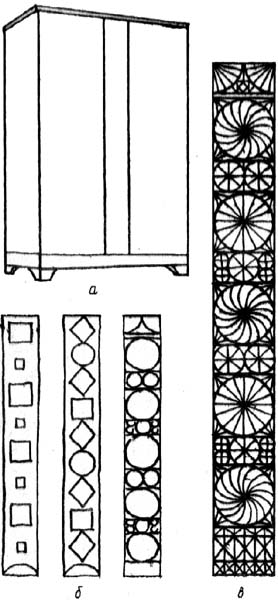
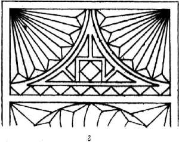
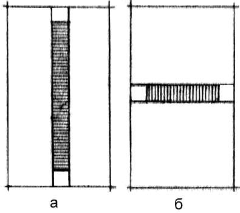
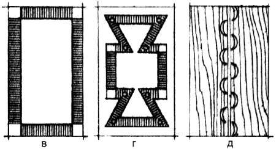
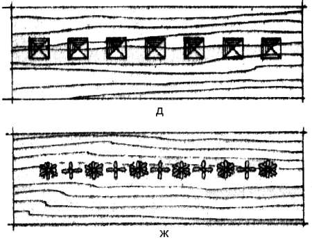

Работа над композицией.

Работу над созданием плоскостной композиции надо начинать с четкого уяснения задачи, которая может иметь два условия: работа над отвлеченной композицией, когда учитываются лишь масштабность рисунка применительно к заданным размерам плоскости и фактура материала, и работа над конкретной деталью предмета мебели, в котором орнаментальная вставка или деталь составляет главное украшение. Работа над композицией первого типа есть работа над так называемой плакеткой – куском орнаментированного столярного щита или доски, применяемой в виде настенного украшения. Это условие является решающим при выборе внутренних размеров деталей орнамента и соотношения их между собой. Здесь предварительный рисунок, отражающий замысел, может быть сразу исполнен в натуральную величину. Надобности в работе в уменьшенном масштабе практически нет. Создавая такой рисунок сначала в виде общего наброска, а затем с проработкой деталей, для лучшего восприятия хода работы надо отходить от него на расстояние, равное по меньшей мере трем диагоналям изображения. Так можно избежать масштабных искажений, обычных при работе «в упор», когда работающий не отрывается от стола.
При разработке композиции, связанной с целым предметом, на ортогональном чертеже той стороны предмета, на которой предполагается использовать орнаментальную вставку, надо найти размеры вставки и ее положение, наилучшим образом соответствующее структуре предмета. Только после этого можно приступить к внутренней разработке композиции этой декоративной части предмета. Здесь наибольшую трудность представляет понимание и ощущение перехода от уменьшенного изображения к натуральному.


Рис. 39. Этапы работы над композицией: а – предметная основа; б – варианты; в – разработка принятого варианта; г – проработка деталей
В работе основным чертежом или рисунком, по которому производится натуральное исполнение, является так называемый картон, шаблон или модель, исполняемые в натуральную величину. Ортогональный чертеж должен точно отражать истинную величину предмета и его основные структурные признаки: количество и пропорции дверок, карнизов, ящиков, подъем от пола, характер верхнего завершения, места установки фурнитуры и пр. Ошибка в этом чертеже неминуемо сделает композицию непригодной. После уяснения местоположения орнамента на предмете, его размеров и конфигурации следует определить характер натуральной формы орнамента применительно к предмету и местоположению. Здесь может быть два решения: плоский орнамент или рельефный.
Безрельефные орнаментальные плоскости обязательны там, где выступы или впадины недопустимы, например в полках, крышках столов, опорных деталях диванов и кресел (спинки и подлокотники). В остальных случаях это дело исполнителя, который принимает решение, учитывая целый ряд обстоятельств, таких, как вид материала, цвет, направление волокон, технология обработки.
Проделав эту работу, расчерчивают в натуре или масштабе 1:2-1:5 конфигурацию орнаментальной вставки и начинают подбирать варианты рисунка, сообразуясь с правилами композиции и обработки натурального материала.
Эскизы рисуют обычно карандашом. Каждый вариант следует доводить до одинаковой степени отделки, чтобы можно было сравнить их между собой. Если один вариант будет отделан и отработан, а второй, даже лучший по замыслу, будет нарисован кое-как, то сравнить их будет трудно. Как говорит опыт, на практике часто прекрасно задуманные вещи из-за плохой подачи, затрудняющей возможность правильного сравнения или оценки в проекте, бракуются часто самим автором.
Затем принятый вариант прорабатывают. Наилучшая проработка – с помощью кальки, которую накладывают на подоснову, нарисованную на бумаге и обводят карандашом неизменяемые части и общий контур. Детали, подлежащие изменению, прорисовывают на кальке, после чего на эту кальку снова накладывают кальку, на которой производятся последующие уточнения. В конце процесса получается полностью проработанный рисунок, по которому можно завершить эскиз.
Окончательно прорисованный на кальке рисунок переводят на бумагу планшета или подрамника способом передавливания. Если рисунок симметричный, сначала передавливают симметричную часть, затем прямую. При этой технологии не нужно намазывать кальку графитом и бумага чертежа меньше загрязнится.
После прорисовки переходят к вычерчиванию набело, обводят линии тушью и раскрашивают или тонируют плоскость. По чертежу выполняют работу в натуре. На чертеже рисуют фасад и разрез. Если композиция сложного профиля, делают два разреза – поперек и вдоль.
Для эскизов композиций, задуманных в технике маркетри, удобно применять способ аппликации. В этом случае калька с окончательно прорисованными деталями передавливается на планшет без последующей обводки. Второй раз калька по частям передавливается на раскрашенную имитирующую бумагу соответствующими частями, которые соединяются затем в целое.
Обводить передавленный рисунок не нужно, чтобы не загрязнять линии стыков.
При работе над плоскостной композицией, кроме вышеприведенных положений относительно линий, тона и рельефа на плоскости, надо учитывать и специфику размещения орнамента на самом предмете мебели в зависимости от его формы.
Так как большинство предметов мебели состоит из ограниченных плоскостей, полосовые орнаменты должны размещаться в пределах границ этих плоскостей (дверки и стенки шкафа, крышки стола и пр.).



Рис. 40. Полосовые орнаменты: а–г – приемы размещений; д, е, ж – сохранение плоскостной основы при введении полосового орнамента
Если же полосовой орнамент переходит с одной плоскости на другую, то в местах поворота или перехода он должен быть закомпонован так, чтобы поворот или переход был естественным. Чем выразительнее полоса, чем она более самостоятельна и замкнута, тем больше ее влияние на общую композицию. Плоскость может распасться на две, если ее разделить слишком широкой орнаментальной полосой от края до края. Полоса может превратить одну плоскость в две, если полоса будет состоять из древесины другой породы, нежели плоскость, или если полоса будет врезана глубже, чем видимый торец или кромка плоскости. И наоборот, полоса может подчеркнуть плоскость, если внутри нее пройдут элементы нерасчлененной плоскости; если она наложена на плоскость так, что та ощущается под полосой; если врезка полосы показывает толщину и массив плоскости, в которую она врезана.
Обычно полосу создают из одной декоративной темы, например из квадратиков, звездочек, цветков, переплетающихся и вьющихся линий. В узких орнаментальных полосах нецелесообразно использовать фигуры сложного рисунка или вводить две-три орнаментальные темы. Такой рисунок получается запутанным, излишне сложным, плохо читается и, несмотря на большое количество вложенного труда, получается неубедительным.
Особое значение для полосового орнамента имеет расположение полосы на предмете. На оформление концов орнаментальной полосы может оказывать влияние ее положение относительно оси симметрии предмета или детали, где эта полоса находится. Горизонтально расположенная орнаментальная полоса должна иметь замыкающие элементы, отличные от рядовых. Заканчивать такую орнаментальную полосу теми же элементами, что и в середине, будет неверно. При этом композиция разрушается: полоса выглядит как бы произвольно вырезанной из непрерывной ленты. Если горизонтальная полоса расположена относительно оси симметрии предмета или детали со смещением, то ее концы следует решать по-разному. Один из концов делают более развитым. Если ось симметрии детали проходит по середине полосы, то ее концы композиционно имеют равное значение и могут быть решены одинаково, замыкая тем или иным образом рисунок средней части.
В беспрерывных орнаментальных украшениях отсутствие замыкающих элементов допускается. На круглых в плане предметах мебели (колонны, цоколи, фризы) можно видеть орнаментальные полосы, не имеющие конечного завершения.
Так как орнамент представляет собой украшение, материал инкрустации должен быть более ценным, чем материал основного поля, но не слишком отличаться от него. Заметим, грубоволокнистая текстура плохо сочетается с тонкой. Поэтому плоскости из дуба обычно не украшают полосами из древесины тонковолокнистых пород. Ценность вклейке можно придать или подкраской дубовых кусков в цвета морения, или за счет изменения направления волокон. Врезанные, утопленные ниже поверхности основы полосы, сохраняющие структуру материала основы, должны сохранять эту структуру как при врезке вдоль, так и поперек волокон. Глубина врезки не должна создавать впечатления ослабления прочности основы, толщина которой легко читается с торца. Это особенно следует учитывать при вставных полосах из другого материала, нежели основа.
Накладные полосовые орнаменты разрабатывают исходя из их значимости на предмете мебели, в соответствии с этим выбирают их форму и профиль. Так, карниз может быть сильно развитым, а накладка на дверке при этом должна быть менее рельефной.
Орнаментальная полоса может быть применена и по контуру плоской основы. Таким образом, возникает рамка, композиционная роль которой заключается в выявлении и поддержании центральной части плоскости. В этой работе очень важно чувство меры, так как сильная, выразительная рамка может «убить» середину.
Один из распространенных приемов обрамлений – профилировка борта и кромки плоскости, часто встречающаяся в столешницах. Здесь композиционная роль полосового обрамления иная – создать впечатление прочности толщины массива плиты, подчеркнуть его ценность и добротность. В зависимости от ценности дерева основа обрамления как украшения должна быть качественно выше. Так, с гладкой облицовкой применяют профильную обкладку, при наборной облицовке – резную кладку, при дорогом массиве – даже золоченую бронзу.
Если текстура древесной плоскости, на которую наносится орнамент, настолько красива, что требует лишь незначительного обогащения, используют обрамляющие орнаменты.
Рамочное украшение плоскости может быть выполнено только из линий, из линий и кусков дерева иного характера, чем основа одних кусков дерева той же породы, что и основа, но имеющих иную отделку и направление волокон, и путем соединения перечисленных приемов. Этот тип мебельных орнаментировок при относительно несложной работе очень выразителен и дает возможность создавать малыми средствами впечатление красоты и богатства предмета.
Если рамочная орнаментальная вставка выполнена из более ценной породы древесины при одновременно более трудоемком и качественном исполнении, чем предмет мебели, необходимо найти переход от этой вставки к поверхности предмета. Переход получается выразительным при использовании контурных рамок из узких полосок древесины ценной породы или объемных профилированных деталей. Направление волокон элементов рамки должно совпадать с направлением длины.
Если разрабатывается композиция в технике маркетри, нужно исходить из следующего. Текстуры аморфные, свилеватые, с перепутанными волокнами и капы следует помещать в центральных композиционных узлах, окружая их по мере перехода к основной плоскости вставками с ясно выраженным направлением волокон. Куски шпона желательно помещать в двойной рамке, т. е. с обеих сторон обтягивать полосками с выраженной волокнистой структурой. Почему надо делать так? Это правило базируется на значительно большей декоративности свилеватых текстур древесины по сравнению с волокнистыми.
Шпон в орнаментальной рамке, составленной из кусков дерева той же породы, что и основа, тонируют, изменяя направление волокон по сравнению с основой. Обогащение такой орнаментальной вставки производится за счет усложнения рисунка, сочетаний кусков и введения контурных полосовых частей, также окрашенных в иной цвет по сравнению с основой и заполнением. Накладные рамки применяют при основе, прочность и толщина которой выглядят внешне убедительно. Чем более развит рельеф рамки, тем убедительнее должно быть впечатление прочности основы, что достигается введением деталей, показывающих ее толщину. Выпуклые накладные детали должны иметь граничный переход к плоской основе.
При организации перехода от выпуклой орнаментальной рамки к основной плоскости предмета, на которую эта деталь наложена, большое значение имеет разница в тоне древесины орнаментальной накладки и основного поля. Чем больше эта разница, тем более развитым должен быть переход. Переход может быть выполнен как за счет ширины или сложности составных частей обрамления, собственно детали, так и за счет дополнительно вводимой профилировки.
Орнаментальные композиции (плоскостные) являются развитием рамочной или кольцевой, они образуются при заполнении внутреннего пространства кольца или рамки. Если рамочная композиция имеет четкую геометрическую форму с ясным внешним контуром, то плоскостная композиция не имеет в этом отношении ограничений. Внешний контур ее может иметь геометрический характер, быть произвольным и заполнять полностью всю плоскость основы.
Смысл плоскостной композиции заключается в том, что она составляет главное содержание на плоскости. Основа здесь в лучшем случае составляет фон, а часто она имеет лишь физический смысл поверхности, на которой развивается композиция. Особенно это характерно для небольших частей мебельных предметов. Плоскостные композиции могут быть основаны на чисто живописном приеме или на введении в живописную плоскость графических линейных элементов. Живописный прием используют обычно в технике маркетри и инкрустациях, не выходящих за плоскость основы. Линейно-сетчатые орнаменты делают либо в технике маркетри, либо в виде рельефа, набранного из профилей.
В случае, если по условиям работы предмет мебели должен быть изготовлен из древесины одной породы, в декоративных украшающих плоскостных деталях следует использовать эту же породу древесины иным образом, чем на рядовых плоскостях. Выразительность декоративных элементов должна строиться на изменении направления волокон, обогащении границ орнаментальной детали, окраске. Характер плоскостных декоративных вставок в большой степени зависит от конструктивной самостоятельности основной плоскости, на которую производится вклейка. Вставки не должны зрительно разрушать конструктивную основу. Декоративная плоскостная вставка может быть расположена по всему полю плоскости или решена как ее украшение, т. е. быть значительно меньшего размера. Во вставных деталях, например в филенках рамочных дверок, орнамент может развиваться по всей плоскости, тогда вся филенка становится декоративной.
В ограниченном поле основы орнамент должен быть выдержан в масштабе, соответствующем предмету мебели или полю основы. Мелкие изобразительные вклейки в щитовую стенку платяного шкафа окажутся не масштабными по отношению к такой довольно крупной детали, здесь уместно введение орнаментики соответствующего размера.
Наиболее характерный прием для получения контраста, который может служить основой для целого ряда композиционных разработок плоскости в предметах мебели с высокой степенью декоративности, – сочетание линии и плоскости.
Линейно-сетчатый орнамент может выполнить с помощью пересекающихся параллельных линий, линий разной толщины и формы, а также разницей в тоне, при которой одна линия светлее другой, но обе либо слабее, либо сильнее основного поля плоскости. Если одна из них светлее, а другая темнее фона, рисунок получается маловыразительным, хотя и достаточно трудоемким в исполнении.
Линии в зависимости от ширины выполняют по-разному. Очень тонкую линию можно прорезать, затем в прорезь втереть темную мастику; линию можно и выжечь. Широкую линию получают техникой маркетри или интарсии. Вклеивать тонкие рейки, выступающие за основную плоскость, целесообразно при специальных приемах отделки, так как шлифовать всю плоскость в этом случае нельзя. Тогда толщина и высота рейки-линии должны быть относительно большими.
Можно выполнять украшения с криволинейными контурами и художественными изобразительными мотивами. Особенно выразительны такие орнаменты на небольших предметах. Обычно подобные украшения выполняют в технике маркетри. Изображение декоративного элемента композиции на бумаге по выразительности не совпадает с тем же элементом, выполненным в натуре. На рисунке или эскизе сетка, да и другие линейные украшения выглядят более отчетливыми. К тому же графически можно усилить звучание линии. На предмете в натуре все детали как бы объединяются, смягчаются их переходы и сочетания, и степень выразительности может оказаться совсем не такой, как было задумано в композиционном рисунке. При выполнении эскиза нужно об этом помнить.
Довольно часто в мебели встречаются комбинированные приемы, в которых используются разные техники (маркетри и рельеф). При этом рельеф практически всегда выступает в качестве обрамляющей композиционной детали, а заполнение поля рисунком производится в технике маркетри. Таким приемом подчеркивают особую ценность несущей конструкции и одновременно повышают значимость внутреннего декоративного рисунка. Использовать рельеф в центре с плоскостным декоративным обрамлением в мебели не целесообразно ввиду невозможности сделать убедительной художественную и конструктивную основы такого сочетания.
Обрамляющий рельеф чаще всего выполняют из профильных столярных деталей. При работе над композицией следует максимально использовать профили одного рисунка. При слишком большом разнообразии профилей усложняется работа, в то же время большое различие их формы отрицательно влияет на выразительность украшения.
Профили желательно разрабатывать по законченной композиционной схеме в соответствии с характером места, где этот профиль должен быть помещен. Так, переход от основы к заглублению лучше всего оформить четвертным валиком или каблучком. Если же переход производится от повышенной части к основной плоскости, используют гусек или выкружку, которые органично подводят одну часть предмета к другой. Каблучок или четвертной валик употребляют, если разница в уровнях сопрягаемых частей композиции значительна. При небольшой разнице в уровнях используют либо гусек, либо выкружку. Если профиль сложный, его части разделяют через полочку или четверть. Рисунок профилей, обращенных внутрь композиции, может быть более энергичным и крутым, чем рисунок частей, обращенных наружу. В этом случае энергичность рисунка будет соответствовать развитию темы и способствовать выразительности центра композиции.